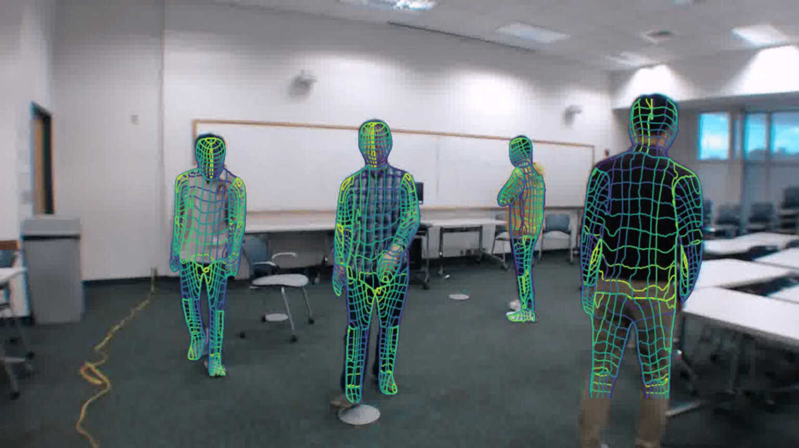
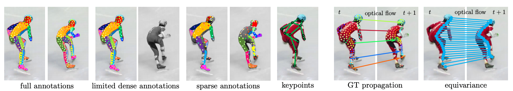
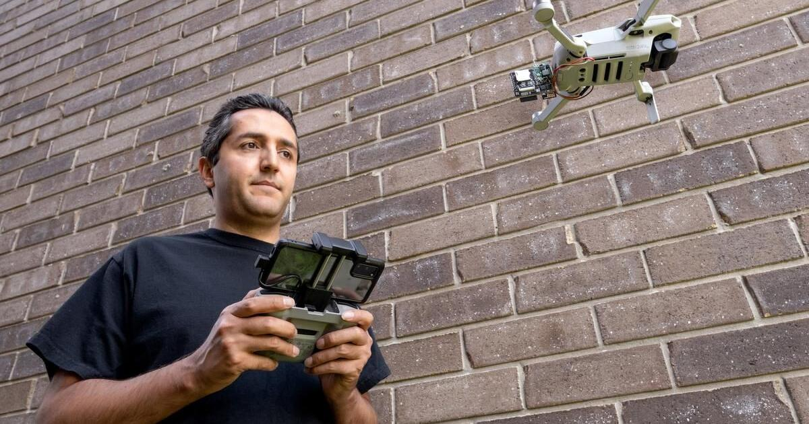
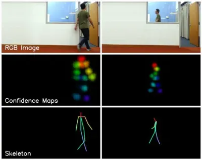
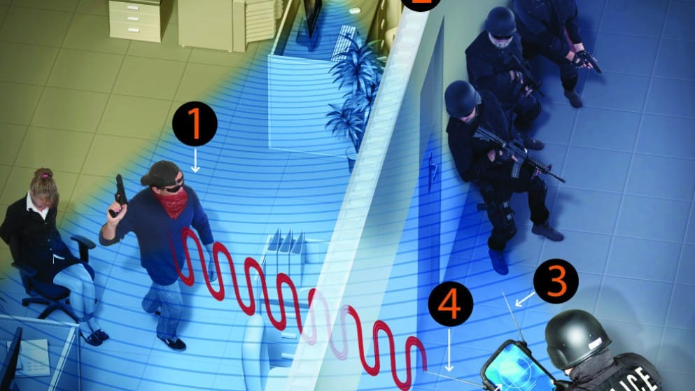

Revolutionary Technology Allows Seeing Through Walls Using Wi-Fi Signals
Revolutionary Wi-Fi technology enables seeing through walls and tracking human movements, raising ethical considerations. Discover how DensePose and Wi-Fi advancements redefine possibilities in wireless sensing.
"In the middle of difficulty lies opportunity."
“"In the middle of difficulty lies opportunity."”Wi-Fi signals, once primarily used for internet connectivity, have now entered an extraordinary realm - seeing through walls. Groundbreaking advancements by researchers from Carnegie Mellon University and the University of Waterloo have harnessed the power of Wi-Fi signals to map and track human movements, even when obstructed by solid barriers.
This unexpected breakthrough has been made possible by integrating Wi-Fi signals into the field of wireless sensing. DensePose and WiFi, two cutting-edge research papers, have converged to revolutionize our understanding of what Wi-Fi signals can achieve. DensePose utilizes deep learning models to transform 2D images into detailed 3D representations of human body poses, originally designed for virtual reality experiences and sports performance analysis. By integrating Wi-Fi signals into DensePose, traditional limitations of cameras and lighting conditions are overcome, enabling camera-independent monitoring and privacy-preserving solutions.

Simultaneously, the WiFi research paper explores the potential of Wi-Fi signals in detecting and tracking human movements. Wi-Fi's ability to penetrate walls offers an unobtrusive yet highly effective means of monitoring human activities. Through advanced deep learning models and signal analysis techniques, this research opens doors to applications in home automation, enhanced security measures, and improved healthcare solutions.
EntrepreneurshipRisk-taking in traditional industriesIn the Lexicon →These groundbreaking advancements not only demonstrate the power of artificial intelligence and machine learning but also compel us to address the ethical dimensions of technological progress. As Wi-Fi signals reshape sectors of society, ethical considerations and responsible usage become crucial. Establishing regulatory frameworks, stringent guidelines, and robust oversight mechanisms are imperative to prevent misuse and uphold ethical standards in this era of wireless sensing innovation.
The Top Articles of the Week
100% Humanly Curated Collection of Curious Content
Pioneering Advances in Artificial Intelligence: DensePose and Wi-Fi
DensePose, a pioneering research paper in computer vision, focuses on the complex task of human pose estimation. Leveraging deep learning models, DensePose transforms 2D images into intricate 3D representations of human body poses. Originally applicable to virtual reality experiences and sports analysis, the integration of Wi-Fi technology into DensePose expands its potential. By incorporating Wi-Fi signals, DensePose overcomes limitations of traditional cameras, offering camera-independent monitoring and preserving privacy.
Complementing DensePose, the WiFi research paper delves into wireless sensing and harnesses Wi-Fi's ability to penetrate walls. This innovative study enables the detection and tracking of human movements using Wi-Fi signals. The development of novel deep learning models and advanced signal analysis techniques unlocks opportunities in home automation, enhanced security, and improved healthcare.
The All-encompassing Impact of Advanced Machine Learning
These research endeavors showcase the dynamic landscape of machine learning and artificial intelligence. Beyond mere technical achievements, they represent a paradigm shift, employing sophisticated algorithms to solve complex challenges across multiple societal sectors. The seamless integration of deep learning models highlights their versatility and adaptability, resulting in transformative applications across various industries.
While the potential applications of DensePose and Wi-Fi technologies are monumental, their deployment must prioritize ethical considerations. The convergence of cutting-edge technologies and privacy concerns calls for a nuanced approach to ensure responsible usage and protect individual liberties. Establishing concrete measures, such as regulatory frameworks, stringent guidelines, and robust oversight mechanisms, becomes crucial in upholding ethical standards during this era of wireless sensing innovations.

Carnegie Mellon University and the University of Waterloo spearhead pivotal developments in wireless sensing technologies, aptly reflecting an era defined by innovation. Embodying this paradigm shift are DensePose and the YP drone-powered device, both leveraging the intrinsic capabilities of Wi-Fi signals to transcend conventional barriers and revolutionize human sensing and tracking methodologies.

DensePose: Redefining Human Pose Estimation

DensePose, a groundbreaking technology developed at Carnegie Mellon University, harnesses the power of deep neural networks to intricately map and analyze the surface pixels of a human body within an image. By incorporating Wi-Fi signals as a novel and innovative detection medium, DensePose transcends the conventional limitations faced by traditional RGB cameras, such as variations in lighting and occlusions. This integration enables a holistic perception of all objects within a given space, offering a nuanced understanding of human movements that is both accurate and comprehensive.
One of the key advantages of DensePose is its camera-independent approach, which not only ensures privacy preservation but also leads to more cost-effective equipment procurement. With its transformative capabilities, DensePose opens up a myriad of potential applications, ranging from monitoring the aging population to detecting anomalies within home environments. In a world that is increasingly interconnected, DensePose reimagines human-centric interactions by providing a deeper insight into human behavior and movements through the seamless fusion of deep neural networks and Wi-Fi technology.
YP Drone-Powered Device: Revealing the Veiled Realms

The YP drone-powered device, a pioneering creation from the University of Waterloo, stands at the forefront of wireless innovation by utilizing the expansive grid of Wi-Fi networks to unveil hidden realms beyond solid barriers. This paradigm-shifting tool seamlessly interfaces with Wi-Fi networks surrounding inhabited structures, enabling it to precisely identify and locate Wi-Fi-enabled devices within buildings with unparalleled accuracy.
Through a meticulous analysis of response times and signal strengths, the YP device captures the exact spatial location of each entity within close proximity, revolutionizing spatial mapping capabilities. The democratized nature of this technology is exemplified by its ease of creation and deployment, utilizing affordable, off-the-shelf drones and cost-effective hardware. The YP device's potential applications span across various domains, from aiding law enforcement interventions to supporting search and rescue missions, while also prompting meticulous ethical contemplation due to its impact on privacy considerations and individual rights.
A Wise Investment of Your Time
List of YouTube videos that captured my undivided attention.
Fostering Innovation for a Connected Tomorrow
The symbiotic evolution of DensePose and the YP drone-powered device epitomizes entrepreneurship and ingenuity, propelling wireless sensing technologies into uncharted realms. This journey demands a holistic approach focusing on responsible usage, regulatory frameworks, and ethical oversight. By intertwining technological progress with ethical considerations, we work towards a future where innovation and societal well-being coexist harmoniously.
Accessibility and Ease of Transportation
Delving deeper into the YP technology reveals a realm of possibilities characterized by promise and caution. The remarkable accessibility and affordability of the YP device, crafted from readily available resources, democratize wireless sensing technology. Its ease of transportation opens avenues for widespread adoption, empowering individuals beyond traditional research circles to utilize the power of wireless sensing.

The transformative potential of the YP device extends across various fields, enhancing law enforcement operations, aiding firefighting teams, and supporting search and rescue missions. However, deploying the YP device also raises ethical concerns surrounding privacy implications and potential misuse. To navigate these challenges, robust ethical frameworks and regulatory oversight are pivotal. Balancing the beneficial applications of the YP device with an unwavering commitment to individual privacy rights ensures responsible utilization of this pioneering technology.
Exploring Potential Applications and Ethical Considerations

The development of technology that enables the visualization of spaces through Wi-Fi signals presents extensive and multifaceted applications. From revolutionizing law enforcement operations to enhancing search and rescue missions, the potential of Wi-Fi-enabled wall penetration is vast. However, it is crucial to navigate concerns related to privacy infringement and ethical oversight.
The clandestine nature of this technology necessitates stringent guidelines, regulatory frameworks, and strong oversight mechanisms to ensure responsible usage and protect individual freedoms. Striking a balance between innovation and ethical imperatives is paramount, and ongoing dialogue and collaboration among stakeholders play a crucial role in steering the trajectory of technological progress.
Charting the Course Ahead
As revolutionary technology redefines the boundaries of possibility in wireless sensing, researchers, policymakers, and industry stakeholders must proactively address emerging challenges and opportunities. By fostering a culture of ethical innovation, promoting transparency, and upholding individual privacy rights, we can shape a future that reflects responsible usage, societal well-being, and ethical stewardship.

Don't forget to check out the weekly roundup: It's Worth A Fortune!